Work with evidence.
A deeper look at projects where I applied technical analysis, systems thinking, data, networking, enterprise development, planning, and service. Each case study focuses on the problem, approach, evidence, and lessons rather than only the final deliverable.
PromisedLand Data Center
A hybrid deployment proposal connecting Azure and AWS into a resilient, scalable operating environment.
The challenge
Design a cloud environment that can support dependable services while considering scalability, resilience, security, and operational clarity.
My approach
What I demonstrated
- Cloud architecture and service selection
- Hybrid-cloud thinking across Azure and AWS
- Infrastructure planning and technical documentation
- Security and resilience considerations
Eragonova Enterprise
A multidisciplinary, contract-ready enterprise platform founded in Kumasi, Ghana, bringing together IT infrastructure, electrical and electronic engineering, data analytics, professional branding, and community development.
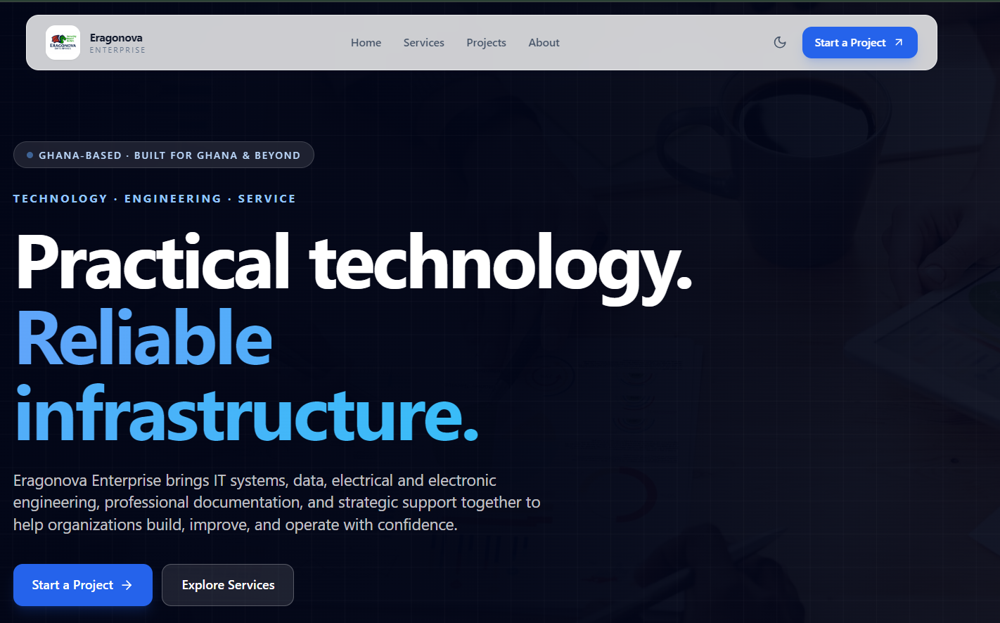
Purpose
Translate technical capability into a clear service identity and a practical digital presence that can grow with the enterprise. Eragonova is designed to serve businesses, NGOs, and communities through a blended remote and in-person delivery model.
Service architecture
Infrastructure design, troubleshooting, optimization, network architecture, cybersecurity, cloud services, remote systems management, server administration, virtualization, integration, and automation.
Remote data analysis and reporting, Business Intelligence dashboards, compliance and audit-ready documentation, and predictive analytics for SMEs and NGOs.
Electrical systems design and installation, electronic circuit design and troubleshooting, renewable energy and solar hybrid systems, industrial automation, and power safety audits.
Strategic branding for contract eligibility, export-ready business documentation, corporate profiles, proposals, reports, digital marketing, and presentation design.
Business administration, strategic planning, NGO and Church project coordination, training and capacity building, self-reliance, and sustainability programs.
Projects and initiatives
- Eragonova Website: A future-proof enterprise website designed to present services and projects with a scalable digital foundation.
- Community Poultry Initiative: A self-reliance project supporting local farmers through feed distribution and training.
- PromisedLand Data Center: Hybrid Azure/AWS infrastructure planning for scalable IT operations.
- Professional Branding Campaign: Corporate profiles, proposals, and reports designed to strengthen contract readiness.
- Renewable Energy Pilot: Solar hybrid systems and safety-audit work for SMEs in Kumasi.
What I demonstrated
- Business and technology alignment across multiple service domains.
- Service positioning, information architecture, and digital communication.
- IT systems thinking combined with engineering and analytics capability.
- Remote and in-person service design for organizations and communities.
- Strategic planning, documentation, quality assurance, and continuous improvement.
Vision & mission
Vision: To position Eragonova Enterprise as a leading contract-ready firm in Ghana and beyond, serving local and international clients with scalable, innovative, and sustainable solutions.
Mission: To empower communities and organizations through technology, engineering, and strategic development while blending remote and in-person delivery to promote reliability, growth, and self-reliance.
Linux Deployment Proposal
A permissions-led Linux server architecture with scalable storage and a clear operational path.
The challenge
Plan a Linux environment that remains manageable as users, services, permissions, and storage requirements grow.
Technical focus
- User and group permissions
- Storage and directory planning
- Security-conscious administration
- Operational documentation
What I learned
Infrastructure quality depends not only on whether a server works, but on whether its access model, storage structure, and operational procedures remain understandable and maintainable.
/srv/shared storage, AWS EBS scaling, team-based users and groups, SSH key authentication, UFW, Fail2Ban, unattended upgrades, and periodic audit controls.Data Analytics & Reporting
Selected academic work exploring SQL results, spreadsheet reporting, and relational database modelling across baseball, aviation, and activity-tracking datasets.
Selected evidence
Select an image to inspect the original screenshot in a new tab.
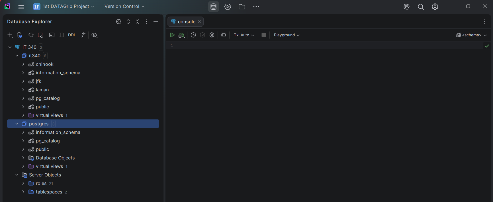
Academic database environment used for SQL projects involving music-store, aviation, and baseball datasets. The chinook, jfk, and laman project schemas sit within the it340 database. This screenshot shows the workspace; selected query outputs appear below.
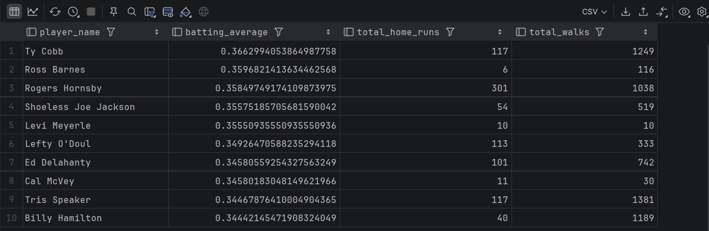
Query results comparing batting averages, home runs, and walks for selected baseball players. This screenshot presents the results table; the SQL source is not included.
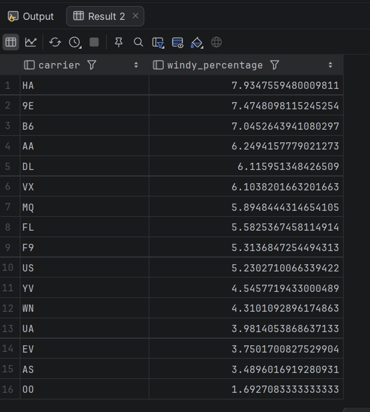
A ranked results table comparing windy-weather percentages by carrier. The source uses wind_speed > 20 and all matched flight/weather rows as its denominator. See the method notes below for scope and data-quality limits.
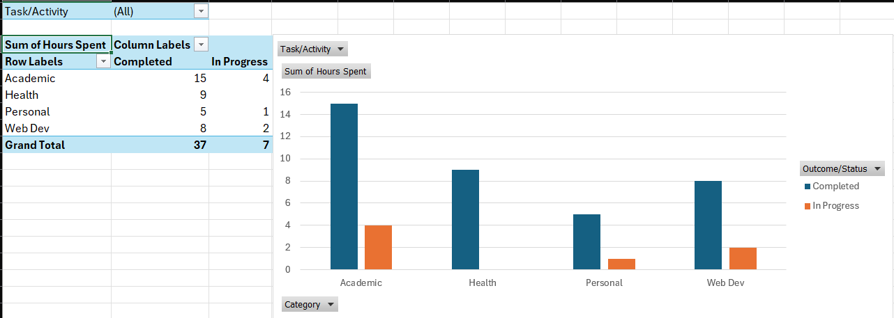
A PivotTable and grouped PivotChart summarizing hours by activity category and completion status. The displayed totals are 37 completed hours and 7 in-progress hours.
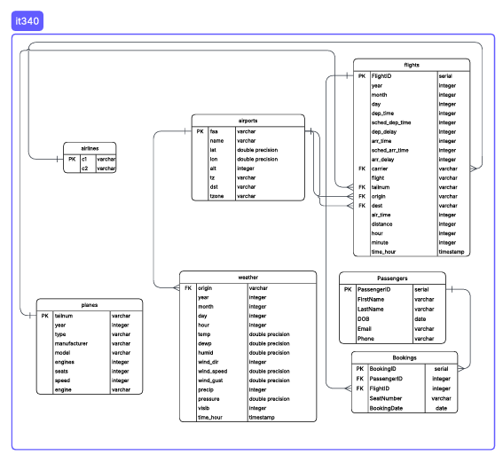
An academic entity-relationship diagram covering flights, airlines, airports, planes, weather, passengers, and bookings. It illustrates schema planning rather than a production database deployment.
SQL behind the analysis
Selected academic queries demonstrate joins, aggregation, CTEs, filtering, and window functions. Source extracts have not been re-executed against the original databases during portfolio preparation.
Baseball: career batting average
Aggregates hits and at-bats, filtering for more than 1,000 at-bats. Home runs and walks provide supporting context; the ranking uses batting average. The cutoff reduces tiny samples but does not remove era differences.
-- Adapted from Executive Summary Enhancing(1).docx.
-- Academic source query; not re-executed during portfolio preparation.
WITH BattingStats AS (
SELECT b.playerid,
p.namefirst || ' ' || p.namelast AS player_name,
SUM(b.ab::integer) AS total_at_bats,
SUM(b.h::integer) AS total_hits,
SUM(b.hr::integer) AS total_home_runs,
SUM(b.bb::integer) AS total_walks
FROM laman.batting b
JOIN laman.people p ON b.playerid = p.playerid
GROUP BY b.playerid, player_name
HAVING SUM(b.ab::integer) > 1000
)
SELECT player_name,
total_hits * 1.0 / total_at_bats AS batting_average,
total_home_runs,
total_walks
FROM BattingStats
ORDER BY batting_average DESC
LIMIT 10;
Chinook: Rock track sequencing
Joins four tables and uses ROW_NUMBER to assign track-ID-based sequence numbers. Add an outer ORDER BY when a sorted display is needed.
-- Source: SQL Query (Chinook Database)(1).docx.
-- Academic source query; not re-executed during portfolio preparation.
-- Set the Chinook schema/search_path for these unqualified table names.
-- ROW_NUMBER assigns a sequence, not a popularity ranking.
SELECT t.TrackId,
t.Name AS TrackName,
g.Name AS Genre,
a.Name AS Artist,
ROW_NUMBER() OVER (
PARTITION BY g.Name ORDER BY t.TrackId
) AS NewTrackNumber
FROM Track t
JOIN Album al ON t.AlbumId = al.AlbumId
JOIN Artist a ON al.ArtistId = a.ArtistId
JOIN Genre g ON t.GenreId = g.GenreId
WHERE g.Name = 'Rock';
Chinook: artist catalog counts
Combines track and album counts with CTEs. The original “recent albums” label is corrected here because the query contains no release-date filter.
-- Adapted from Executive Summary 4(2).docx.
-- Renamed "recent albums": the source contains no release-date filter.
-- These are catalog counts, not a measure of recent activity.
-- Not re-executed during portfolio preparation.
WITH ArtistTrackCounts AS (
SELECT ar.artistid, ar.name AS artistname,
COUNT(t.trackid) AS totaltracks
FROM chinook.artist ar
JOIN chinook.album al ON ar.artistid = al.artistid
JOIN chinook.track t ON al.albumid = t.albumid
GROUP BY ar.artistid, ar.name
),
AlbumCounts AS (
SELECT ar.artistid, COUNT(al.albumid) AS albumcount
FROM chinook.artist ar
JOIN chinook.album al ON ar.artistid = al.artistid
GROUP BY ar.artistid
)
SELECT a.name AS artistname, atc.totaltracks, ac.albumcount
FROM ArtistTrackCounts atc
JOIN AlbumCounts ac ON atc.artistid = ac.artistid
JOIN chinook.artist a ON atc.artistid = a.artistid
ORDER BY ac.albumcount DESC, atc.totaltracks DESC;
JFK aircraft usage: portfolio redesign
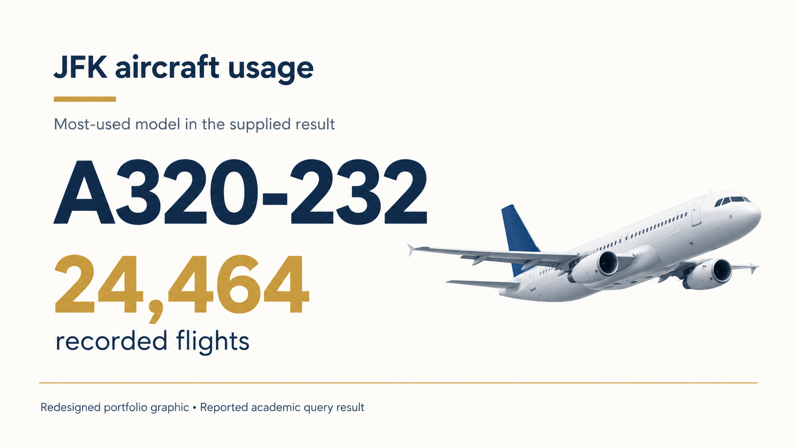
From SQL to Power BI and Tableau
I reused these analyses in Power BI and Tableau with small changes to the presentation. The screenshots below document Power BI report development; a Tableau export is not included in this evidence set.
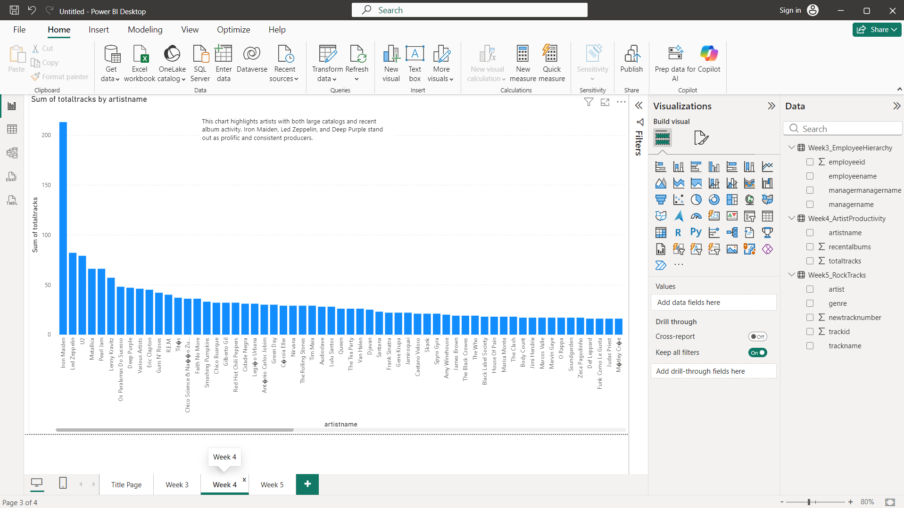
The original annotation refers to recent activity; the supplied SQL supports catalog counts only. The downloadable query above corrects this label.
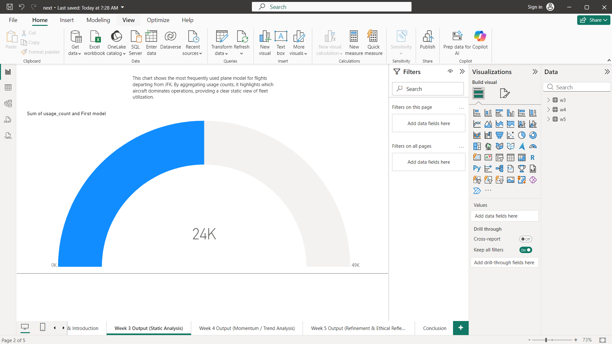
The screenshot rounds the count to 24K. The result card above preserves 24,464; the gauge does not establish a market share or performance target.
Method and interpretation notes
- Wind: The source uses wind_speed > 20 and divides qualifying rows by all rows in an inner flight/weather join, grouped by carrier. It has no explicit JFK-origin filter. Check units, join uniqueness, missing wind values, and airport scope before interpreting the results. Wind exposure does not establish safety or resilience.
- Rain and schools: These source summaries label their findings hypothetical, so they are not published as measured outcomes. The rain query needs column and grouping corrections. The schools query needs a defined season/stint grain and checks for duplicate joins.
- Pitchers and teams: The pitcher query needs zero-innings handling and a meaningful innings cutoff. The team query selects three season rows rather than aggregating each team's latest three seasons.
Network Fingerprinting & Security Assessment
A controlled network discovery exercise using Zenmap/Nmap to identify active hosts, fingerprint operating systems, inspect exposed services, and consider security implications.
Technical workflow
Security interpretation
The scan highlighted exposed Windows/RPC/SMB-associated services that would warrant further defensive review in an authorized environment. The exercise demonstrated how network reconnaissance can inform hardening and monitoring decisions.
Stake Welfare & Self-Reliance Plan · 2026
A structured 2026 program plan prepared while serving as a Welfare & Self-Reliance Specialist for the Ghana Kumasi University Stake.
The planning challenge
Translate organizational direction and identified member needs into a practical year-long plan with initiatives, schedules, responsibilities, coordination points, and measurable outcomes.
Planning framework
What I demonstrated
- Converted broad direction into an actionable annual plan.
- Designed recurring coordination meetings and workshops with dates and participants.
- Established measurable targets and quarterly reporting expectations.
- Defined stakeholder coordination across leadership, specialists, and local units.
- Built follow-up and outcome tracking into the plan rather than treating activities as isolated events.
Measurable outcomes
The plan included targets for livelihood participation, produce sales, self-reliance class cycles, and timely quarterly reporting. These measures were intended to make progress visible and support informed adjustments.
Graphic Design & Visual Identity
Selected work spanning brand identities, advertising, notebook cover design, and campaign graphics.
Selected designs
Select any image to view the full-size artwork.


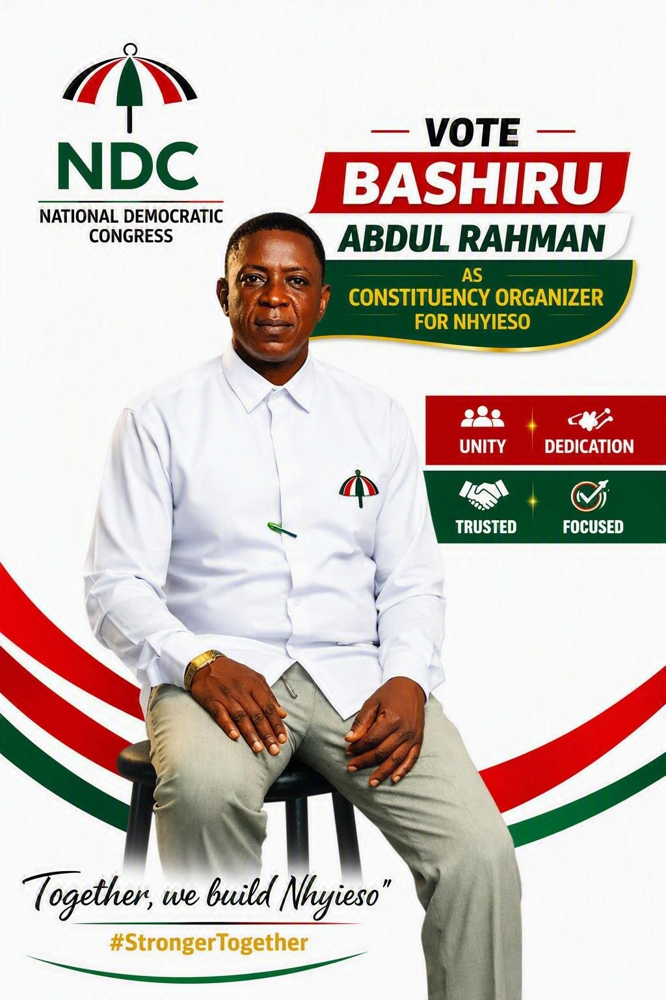
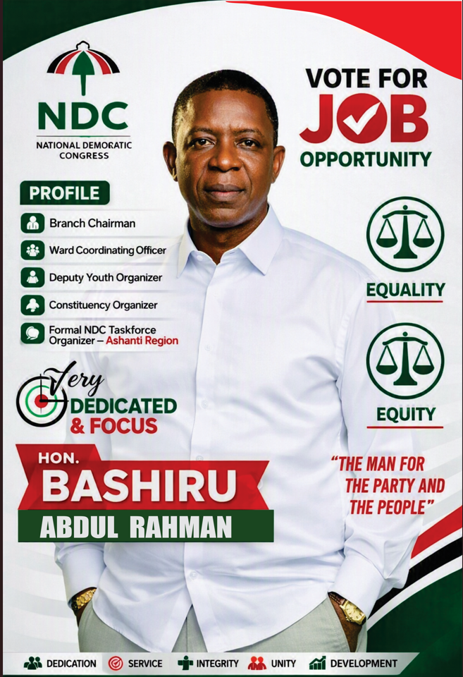
Data Detective — Research Presentation
An 11-slide academic presentation reviewing AI adoption, productivity, and employment. This sample showcases slide composition, information hierarchy, and visual storytelling.
Design focus
- A coordinated navy-and-gold visual theme with clear section headings.
- Layouts combining charts, short commentary, and key takeaways.
- A narrative progressing from research context to critique and reflection.
Selected slides
Select a preview to view it full-size in a new tab.
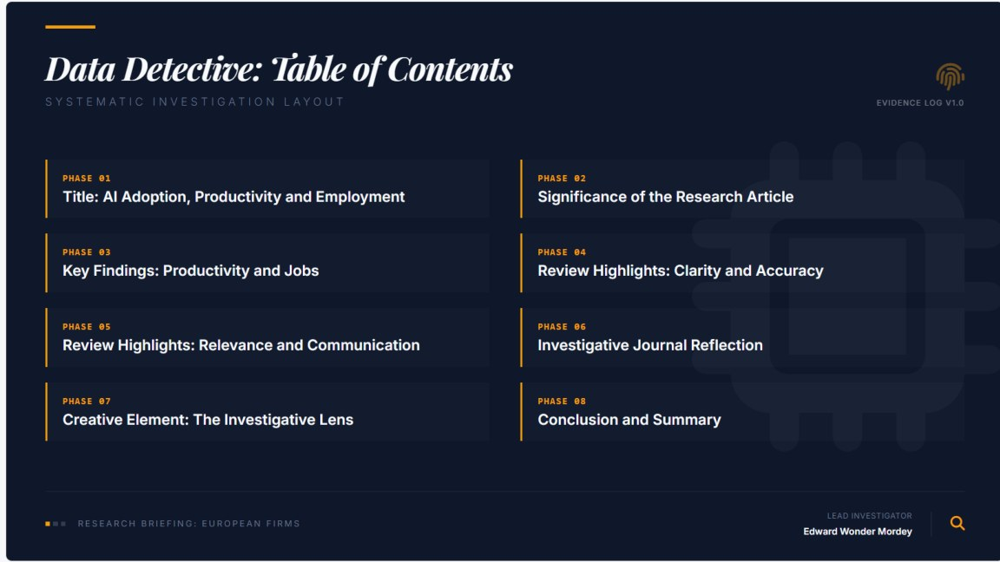
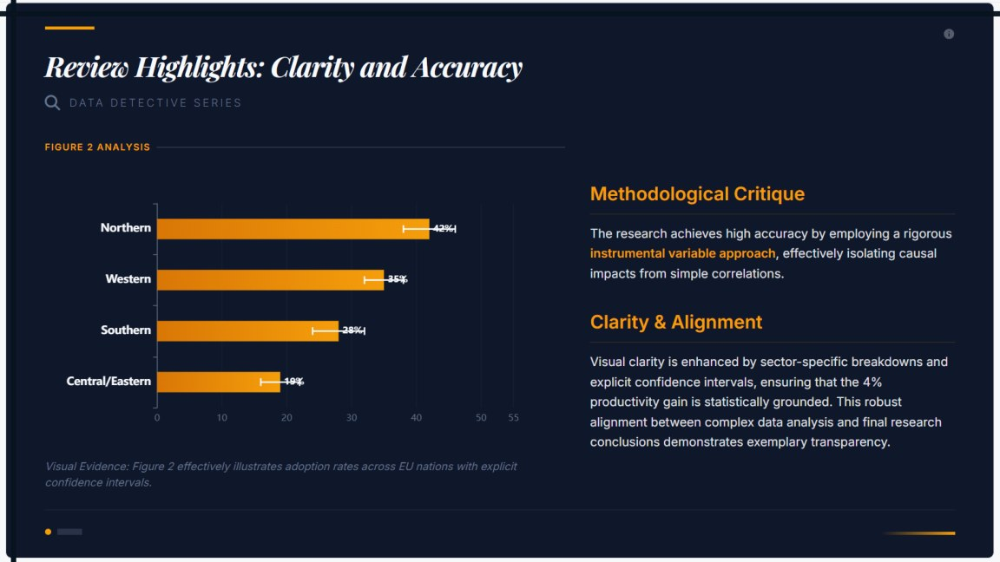
Kumasi YSA Quick Start Guide
A practical community-orientation guide for young single adults in the Kumasi Ghana University Stake, written for university students, recent graduates, and young professionals.
The communication challenge
Help readers balance faith, friendship, education, service, and personal growth without overwhelming them with too many instructions at once.
How the guide supports readers
- A “Start Here” section turns the first week into five concrete actions.
- Daily, weekly, and monthly routines make ongoing habits easier to follow.
- Plain-language headings and direct instructions help readers find the next step.
- Planning routines, support information, and a final checklist turn advice into practical tasks.
Skills demonstrated
Audience-focused writing, organizing information, procedural instructions, checklist design, and communicating community resources in accessible language.
Communication Development Plan
A personal learning project using self-evaluation, measurable goals, deliberate practice, accountability, and reflection to improve interpersonal communication.
From intention to practice
Reduce distractions, avoid interruptions, and summarize what the speaker said to check understanding. The plan sets a target of practicing this in two conversations daily.
Prepare a thought or question before discussions, contribute an idea, and request feedback on clarity.
Notice stress, pause before responding, and reflect on how reactions influence teamwork.
Listen to another perspective, use “I” statements, and identify a workable compromise.
Learning and application
My journal describes using paraphrasing, preparing for discussions, and pausing during disagreements. These self-reported reflections helped identify both progress and areas needing continued practice. They inform how I approach support conversations, team coordination, and explaining technical work.